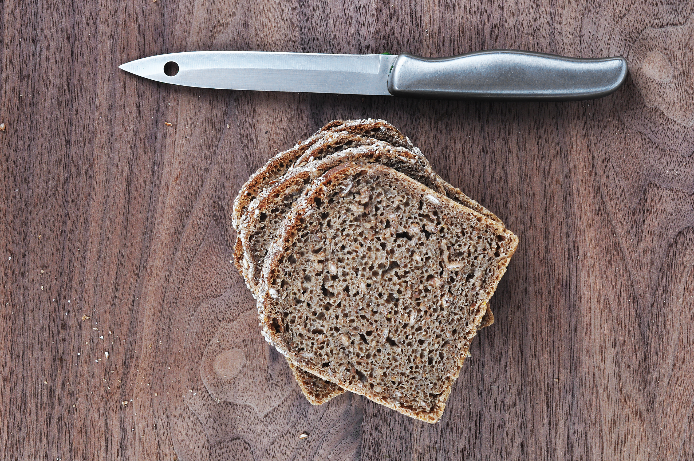

Avaldsnes
Om oss
Sildakongen holder til i Avaldsnes.
Sildakongen holder til i Avaldsnes og tar oppdrag innen krydderfilét, skutesild, utsira-sild og sennepsild.
Sild er nemlig en naturlig kilde til rikelig med omega-3 fettsyrer, D-vitaminer og proteiner.
Forside - Sildakongen Oppskrifter Helse Fisken Tradisjon Kontakt Produkter Meny Produkter Oppskrifter Helse Fisken Tradisjon Kontakt Produkter 1 Krydderfilét 2 Skutesild 3 Utsira-sild 4 Sennepsild 5 Sursild 6 Gjestgiversild 7 Gaffelbit gammeldags god og sunn kvalitetssild --> Stolthet for ekte helnorsk produksjon! Sild og sildeprodukter er tradisjonsmat og var et viktig næringsgrunnlag for befolkningen langs kysten.
Haugesundregionen har alltid vært ledende når det gjelder sildekvalitet og gode oppskrifter.
«Henvendelsen som ikke blir liggende»

Vil du vite mer?
Vi svarer på det du lurer på, uten bindende avtale.
Ta kontakt